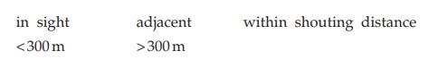
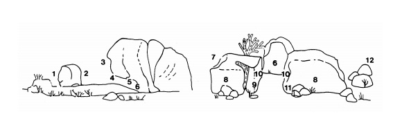
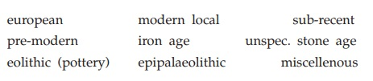
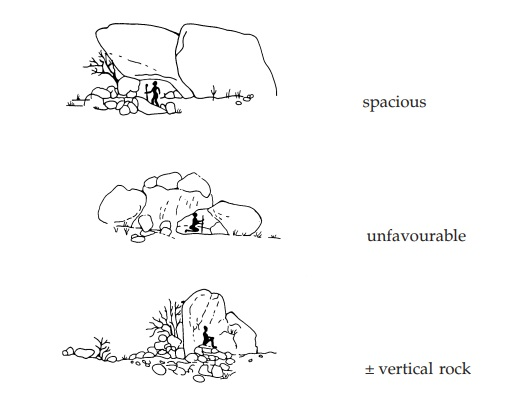
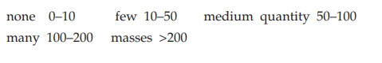

Forschung
Listet die Fundstellen-Codes in der Reihenfolge auf, wie sie in der Veröffentlichungen sind (PAGER 1989–2006).
Die vollständigen Namen der entsprechenden Schlucht.
Einige der bekanntesten Stätten haben gebräuchliche Namen. Diese "Spitznamen" können aus einzigartigen Gemälden abgeleitet werden.
Listet die Person auf, die der erste Besucher dieser Fundstelle war.
Bekanntes Datum der ersten Entdeckung.
Spezifischer Band, der sich auf die Fundstelle bezieht (PAGER 1989–2006).
Listet die geografische Entfernung zur nächsten Fundstelle in Metern auf.
Hinsichtlich der topographischen Situation wurden Beobachtungen darüber gemacht, ob Wasser innerhalb weniger Gehminuten erreichbar ist. Es wurden zusätzliche Informationen über die Sichtbarkeit einer bestimmten Wasserquelle vom Standort aus aufgezeichnet
Kennzeichnet das Vorhandensein einer offenen Fläche von mindestens 10x10m, die die Durchführung von sozialen Aktivitäten ermöglicht, die einen solchen Raum benötigen, z.B. Tanzen oder Spielen. Es wurden zusätzliche Informationen über die Sichtbarkeit eines bestimmten offenen Feldes von der Fundstelle aus aufgezeichnet
Gibt Auskunft über die schematische Platzierung der Malereien auf dem Felsen, d.h. welche Teile der 'Architektur' der Stätten für die Malerei verwendet wurden. Beispielsweise ist die überwiegende Mehrheit der Gemälde an der Decke gemalt (Malort Nr. 5), während nur sehr wenige an der linken Flanke des Eingangs (Malort Nr. 9) gemalt sind.
Gibt Informationen über frühere Besucher, abgeleitet von Artefakten, die auf der Fundstelle zu finden sind.
Kategorisierung für die 'Lebensqualität' einer Schutzhütte. Ein "spacious" Schutzraum hat einen mehr oder weniger flachen, ebenen Boden und ist so hoch, dass eine 170 cm große Person aufrecht unter dem Dach stehen kann. Ein "unfavourable" Unterkunft ist ein Ort mit unebenem, geneigtem Boden und/oder ein Ort, an dem es unmöglich ist, im Inneren aufrecht zu stehen. Ein "±vertikal rock" ist ein Felsblock, der keinen Überhang hat, der einer Person Schutz bieten könnte.
Gibt an, wie viele Menschen in den Raum passen.
In der frühen Phase der Feldaufnahmen wurden die ARTEFAKTEN durch Schätzung der Gesamtmenge der Artefakte an der Fundstelle erfasst (keine, wenige, mittlere Menge, viele, Massen). In den späteren Stadien wurden die Artefakte durch Schätzung der Menge pro Lithics, Pottery, O.E.S. (Straußeneierschale), Bones, Charcoal, Grinding Implements, Strone Structures und Miscellenous Artefact vor Ort in fünf entsprechenden Kategorien.
Auf dieser Seite können Sie sich die Fundstellen mit bestimmten Eigenschaften ansehen. Sie können nach Schluchten und Menge von Artefakten sortieren und entsprechende Informationen bekommen.